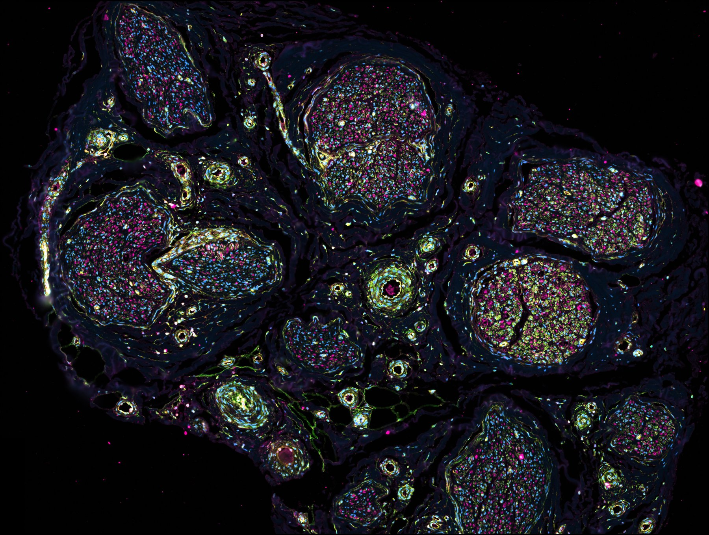
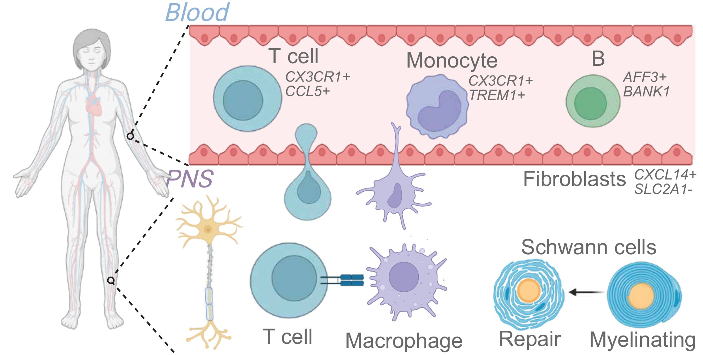

Unmet need in CIDP
Chronic Inflammatory Demyelinating Polyneuropathy is a rare autoimmune disorder in which the immune system attacks the myelin sheath of peripheral nerves — causing muscle weakness and sensory loss — and lacks curative or highly targeted therapies.
We combined single-cell and spatial multiomics on peripheral nerve biopsies and peripheral blood from CIDP patients and controls: Xenium in situ profiling of 477 genes and 27 proteins in nerve, validated in an independent single-nucleus RNA-seq cohort; a blood atlas of 327,559 cells from 28 donors (21 CIDP, 7 controls); and plasma proteomics of 3,255 proteins (Olink Explore HT).
Key findings
New method
Blocking CX3CR1-mediated immune infiltration could be a targeted therapy for CIDP — an alternative to the broad immunosuppression (IVIg) that is the current standard of care.
Anatomy of the peripheral nerve at cellular resolution
Xenium in situ sequencing of 477 genes and 27 proteins across control and CIDP sural nerve cross-sections, integrated with CellCharter to define spatial niches.
Cell types identified
Immune: Mast cells, macrophages (M1 CX3CR1⁺ ADAM28, M2 MNDA, M2 CLEC10A CCR2, M2 MS4A7, M2 LYVE1), T CD8 CCL5⁺, T CD4 CORO1A⁺ LCK⁺.
Stromal: Fibroblasts, adipocytes, mural, arterial and venous smooth muscle.
Nerve-support: Schwann cells — myelinating, non-myelinating (Remak bundles), repair Schwann / regenerating endoneurium, quiescent SOX2.
Vascular / barrier: Perineurium (blood-nerve barrier), venous endothelium, epineurium, endoneurium, pericyte microvasculature, epineurial perivascular / lymphatic.
Spatial niches (CellCharter)
Twelve reproducible spatial niches were defined, ranging from mature endoneurium and myelinating Schwann territory to a distinct regenerating endoneurium / repair Schwann niche and an immune-adipose aggregate. A cell’s niche predicts its expression profile better than its cell type alone (per-gene Pearson r 0.25 vs 0.21 across 558 genes; P = 4.2 × 10⁻⁸).
The myelinating Schwann niche shrinks in CIDP (10.2% → 5.9% of tissue; q = 0.027). The repair niche is on average ~8-fold larger but varies widely between biopsies (not significant), and when present it is Schwann-cell-dense.
Myelin morphology and Schwann cell repair, measured by AI segmentation of Xenium autofluorescence
A fine-tuned CellPose-SAM + Gemma-aided CNN pipeline segments myelin rings directly from Xenium autofluorescence, letting us measure per-ring geometry and colocalise with immune cells at scale.
Myelin geometry is altered in CIDP
| Metric (mean per donor) | Effect in CIDP | P | Direction |
|---|---|---|---|
| Ring area | +31% of control | 0.024 | ↑ larger |
| Sheath thickness | +16% of control | 0.014 | ↑ thicker |
| g-ratio | no significant change | n.s. | — unchanged |
Control n = 8, CIDP n = 11 donors. Sheath thickness scales with fibre size, so surviving fibres are larger but proportionate. This fits preferential loss of small fibres, onion-bulb formation around repeatedly damaged fibres, or both — to be resolved against conventional histology.
Cell types spatially enriched around myelin rings
Enrichment within 10 µm of any ring, both conditions pooled. Schwann lineage cells are enriched ~2–2.5-fold, validating the segmentation; M1 CX3CR1⁺ ADAM28 macrophages are the most ring-proximal immune cells. No cell type differs significantly between control and CIDP ring neighbourhoods.
A stalled repair state in Schwann cells
Repair programme up in CIDP
| APOD | ↑ replicated |
| NGFR | ↑ replicated |
| GAP43 | ↑ replicated |
| PCNA (protein) | ↑ ~20-fold |
Unchanged or down in CIDP
| MPZ, PRX, S100B | ↓ (Xenium) |
| MKI67, TOP2A, PCNA mRNA | — unchanged |
| Ki-67 (protein) | — unchanged |
Across all three Schwann cell subtypes, the repair genes APOD, NGFR and GAP43 rise in CIDP and replicate in the independent snRNA-seq cohort, while proliferation genes are flat. At the protein level, PCNA accumulates without Ki-67 (donor-level P = 2.6 × 10⁻⁵, complete separation; Ki-67 P = 0.60): Schwann cells are engaged in the cell cycle or DNA repair but are not dividing. They enter repair but do not complete it. Restarting the SOX10/EGR2 myelination programme is a candidate therapeutic strategy.
JUN and EGR1, shown on our September 2026 poster, changed in opposite directions in the validation cohort and are no longer used as markers.
Contributors of inflammation in the nerve
A remodelled blood–nerve barrier, infiltrating effector T cells and Schwann-engaged macrophages together define the diseased microenvironment.
The perineurial barrier is remodelled
In perineurial fibroblasts, the tight-junction gene CLDN1, the Hedgehog receptor PTCH1, DCN and APOD all increase in CIDP, and all four replicate in the snRNA-seq cohort. Because Schwann-cell-derived Desert hedgehog maintains the perineurium, this suggests an active, Hedgehog-linked response of the barrier to injury.
Loss of SLC2A1 (GLUT1), shown on our September 2026 poster, reversed direction in the validation cohort and is not interpreted.
CD8 CCL5⁺ T cells expand in the nerve
T CD8 CCL5⁺ cells dominate the disease-associated T cell increase — likely originating from peripheral blood, matching the CD8 effector egress signature seen in the blood atlas.
Macrophage polarisation shifts to M1
| Subset | Marker | Direction in CIDP |
|---|---|---|
| M1 | IRF8, APOE, TREM2 | ↑ increased |
| M1 | CX3CR1, ADAM28 | ↑ increased |
| M2 | MS4A7 | ↓ decreased |
| M2 | LYVE1 | ↓ decreased |
The macrophage subset expanded in the nerve carries the same fractalkine receptor CX3CR1 that marks the migrating monocytes and effector T cells in blood, pointing to a single axis (CX3CL1–CX3CR1) coordinating the shift from circulation to tissue.
The disease-associated CX3CR1⁺ macrophages co-express CD11c, CD68, PLXDC2 and IRF8 — the phenotypic fingerprint of the inflammatory M1 subset within the nerve.
Macrophages switch programme on contact with Schwann cells
Each macrophage state has a defined address: CX3CR1⁺ ADAM28 macrophages are the only state enriched among all three Schwann cell subtypes, whereas LYVE1⁺ and MS4A7⁺ macrophages live in the epineurium and avoid Schwann cells. Comparing macrophages near to and far from Schwann cells within each donor:
| Readout | Near Schwann cells (CX3CR1⁺ ADAM28 and TREM2⁺ APOE⁺ precursors) |
|---|---|
| TREM2, APOE (RNA) | ↑ up |
| CD68, CD11c (protein) | ↑ up |
| MRC1 (RNA), CD163 (protein) | ↓ down |
| Myelin transcripts (MPZ, MBP, PLP1) | ↑ up — engulfed myelin or segmentation spillover, being resolved |
Schwann contact therefore converts these macrophages from a homeostatic to a TREM2–APOE phagocytic state. Where TREM2⁺ APOE⁺ precursors are denser, neighbouring Schwann cells express more of the repair gene APOD. Whether these macrophages cause the Schwann cell stall or respond to it is the central open question; we are testing six candidate mechanisms against pre-specified spatial predictions before functional experiments.
Blood atlas of 327,559 PBMCs from 28 donors
Milo differential abundance testing identifies 11 cell types (8 depleted, 3 enriched) with a coherent story: effector lymphocytes and IFN monocytes leave the blood for tissue; TREM1⁺ inflammatory monocytes and LDGs accumulate.
Differentially abundant populations
Terminal effector CD8 T cells leave the blood
150 of 2,200 T CD8 CTL/EM neighborhoods depleted (median log₂FC = −0.98) — the strongest single-cell signal in the study. Depleted cells are transcriptionally terminally differentiated, migratory, and not exhausted.
Monocyte compartment splits in two
CD14⁺ IFN-activated Depleted
| MX1 | +3.30 |
| IFI44L | +3.59 |
| ISG15 | +2.96 |
| STAT1 | +2.37 |
| CX3CR1 | +1.29 |
DPYD⁺PLXDC2⁺ TREM1-driven Enriched
| IL1B | +2.07 |
| SGK1 | +1.85 |
| CD83 | +1.67 |
| CLEC7A | +1.16 |
| TLR2 | +0.97 |
Proteomic confirmation of the TREM1⁺ axis: CLEC4E (Mincle) at log₂FC = +1.54 (padj = 0.016) and IL-6 at +1.75 (padj = 0.045); CXCL8, IL1RN and STAT2 all suggestive-elevated. TREM1 inhibitors (Phase II in sepsis) are a candidate for repurposing.
Summary

Findings across compartments
- Blood. Effector CD8 T cells and CX3CR1⁺ IFN-activated monocytes are depleted from the circulation; TREM1⁺ inflammatory monocytes accumulate, with IL-6 and CLEC4E raised in plasma.
- Nerve. CX3CR1⁺ ADAM28 macrophages sit among Schwann cells and switch on a TREM2–APOE–CD68 phagocytic programme on contact; CD8 CCL5⁺ T cells expand; the perineurial barrier is remodelled (CLDN1, PTCH1).
- Schwann cells. Reprogrammed, not lost — the repair programme (APOD, NGFR, GAP43) is switched on without proliferation, PCNA accumulates without Ki-67, and surviving fibres are enlarged with a preserved g-ratio.
Blocking CX3CR1–fractalkine signalling could reduce immune infiltration of peripheral nerve tissue in CIDP. Combining this with a remyelination-promoting agent that restarts SOX10/EGR2 may give both anti-inflammatory and regenerative benefit.
Methods, code, and data
This site accompanies our manuscript (in preparation). Code and figures are in the GitHub repository; preprint and data DOIs will be added on publication.